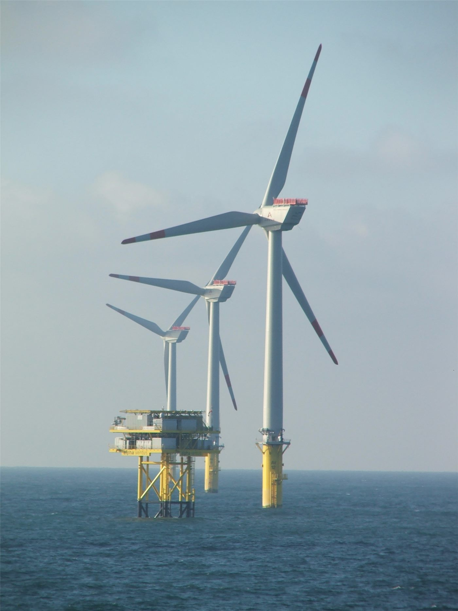

18㎿ 초대형 해상풍력 첫 대규모 상업운전… 광둥 양장 「판스」 단지 전면 가동
중국 광둥성 양장 앞바다에서 단일 용량 18㎿급 초대형 해상풍력 발전기를 대규모로 적용한 단지가 전체 용량 가동에 들어갔다. 로터 직경 292m의 발전기 33기가 들어섰고, 단지 전체로는 연간 66억㎾h의 전력을 공급한다.
주유민 기자 · 2026.09.26
橋중국

중국광핵그룹(CGN)의 광둥 양장 판스(帆石) 200만㎾ 해상풍력 프로젝트가 24일 전체 용량 상업운전에 들어갔다. 중국에서 18㎿급 해상풍력 발전기를 대규모로 적용한 첫 사례다.
광고 문의 · 300×250이 단지는 100만㎾급 하위 프로젝트 두 개로 이뤄졌으며, 이 가운데 18㎿급 초대형 발전기 33기가 설치됐다. 현재 중국에서 대량으로 설치된 해상풍력 기종 가운데 단일 용량이 가장 크다.
축구장 9개 크기의 날개
발전기의 로터 직경은 292m, 날개가 휩쓰는 면적은 약 6만6000㎡로 표준 축구장 9개 크기다. 발전기 한 기의 연간 발전량은 5600만㎾h이며, 로터가 한 바퀴 돌 때마다 43㎾h의 전기를 만든다.
단지 전체로는 해상풍력 발전기 131기가 설치돼 해마다 약 66억㎾h의 청정 전력을 공급한다. 이는 표준 석탄 약 192만t을 아끼고 이산화탄소 약 510만t을 줄이는 효과에 해당한다고 운영사는 밝혔다.
먼 바다 전력을 안정적으로
이번 프로젝트에는 중국 해상풍력 단지 최초의 500㎸ 중간 무효전력 보상소도 지어졌다. 대용량 풍력 전력을 먼 거리까지 안정적으로 보내는 과제를 풀기 위한 설비다.
이번 가동으로 양장시의 해상풍력 설비 용량은 800만㎾를 넘어 중국 지급시 가운데 가장 큰 규모가 됐다. 발전기 대형화는 설치 기수와 유지보수 비용을 줄여 해상풍력의 발전 단가를 낮추는 방향으로 이어지고 있다.
출처·참고 (사실 확인용 — 본문은 직접 재작성)
· 環球網
· 環球網